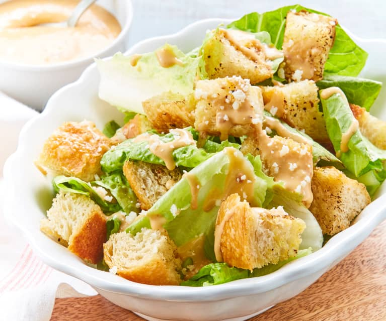

Croquetas de Jamón Serrano y Huevo Duro

- Leche entera 600 ml
- Mantequilla cucharada sopera 1
- Harina de trigo cucharada sopera 1
- Jamón ibérico muy picado 100 g
- Huevo duro o cocido 2
- Huevo para envolver las croquetas 2
- Pan rallado para envolver las croquetas
Preparación
1. Preparar la bechamel: Derrite la mantequilla en una sartén, añade la harina y remueve. Agrega la leche poco a poco, removiendo para evitar grumos. Cocina hasta que espese. 2. Añadir ingredientes: Incorpora el jamón picado y el huevo duro finamente picado a la bechamel. Ajusta la sal. 3. Enfriar y formar: Deja enfriar la mezcla en una fuente cubierta con film transparente. Una vez fría, forma las croquetas. 4. Empanar y freír: Pasa las croquetas por huevo batido y pan rallado. Fríelas en aceite caliente en tandas hasta que estén doradas y crujientes.
Tortilla de Patatas

- Patatas 500 g
- Huevos 6
- Aceite de oliva
- Sal
- Cebolla (opcional) 1
Preparación
1. Cocinar las patatas: Pela y corta las patatas en rodajas finas o cubos. Fríelas en abundante aceite de oliva a fuego medio, removiendo ocasionalmente. Si usas cebolla, agrégala cuando las patatas estén a medio cocer. 2. Preparar la mezcla: Una vez tiernas, retira las patatas y la cebolla del aceite y escúrrelas bien. Bate los huevos con sal en un bol y mezcla con las patatas fritas. 3. Cocinar la tortilla: Vierte la mezcla en una sartén con un poco de aceite y cocina a fuego medio-bajo. Cuando un lado esté cuajado, dale la vuelta con un plato grande o una tapa y cocina el otro lado hasta dorar. 4. Servir: Retira del fuego y sirve.
Gazpacho Andaluz

- Tomates maduros 1 kg
- Pimiento verde 1
- Pepino 1
- Ajo 1 diente
- Aceite de oliva virgen extra
- Vinagre
- Sal
Preparación
1. Preparar los ingredientes: Lava bien los tomates, el pimiento verde y el pepino. Corta los tomates en cuartos, pela y trocea el pepino. 2. Mezclar: Coloca los tomates, pepino, pimiento, un diente de ajo y una pizca de sal en una batidora. Bate a alta velocidad hasta obtener una mezcla homogénea. 3. Añadir aceite y vinagre: Agrega un buen chorro de aceite de oliva virgen extra y un poco de vinagre, y sigue batiendo. 4. Colar y refrigerar: Si deseas una textura más fina, cuela el gazpacho para eliminar pieles y semillas. Refrigéralo por al menos una hora antes de servirlo frío, con trocitos de pepino, pimiento y cebolla finamente picados.
Paella Valenciana

- Arroz 500 g
- Pollo 300 g
- Judía verde 150 g
- Garrofón 100 g
- Tomate 2
- Azafrán
- Aceite de oliva
- Sal
Preparación
1. Sofreír: Calienta aceite de oliva en una paella o sartén grande. Sofríe el pollo troceado hasta dorarlo. 2. Añadir verduras: Incorpora las judías verdes y el garrofón, y sofríelos junto al pollo. 3. Agregar tomate: Añade el tomate rallado y cocina hasta evaporar el agua. 4. Cocinar arroz: Agrega el arroz y remueve para mezclar con el sofrito. Vierte caldo de pollo o agua con sal y lleva a ebullición. 5. Cocción: Cocina a fuego medio sin remover el arroz para formar la capa de socarrat (arroz tostado en el fondo). Cocina hasta que el líquido se evapore y el arroz esté tierno. 6. Finalizar: Si deseas, añade hebras de azafrán para más sabor y color. Deja reposar unos minutos antes de servir.
Flan de Huevo
- Huevos 4
- Leche 500 ml
- Azúcar 100 g
- Caramelo líquido
Preparación
1. Preparar caramelo: Derrite azúcar en una sartén a fuego medio hasta que se vuelva dorado, sin remover. Vierte el caramelo en el fondo de los moldes. 2. Mezclar flan: Bate los huevos con azúcar y esencia de vainilla. Añade la leche poco a poco mientras sigues batiendo. 3. Hornear: Vierte la mezcla en los moldes sobre el caramelo. Coloca los moldes en una bandeja con agua (baño maría) y hornea a 180°C durante unos 45 minutos, o hasta que el flan esté cuajado. 4. Enfriar: Deja enfriar a temperatura ambiente y luego refrigera antes de desmoldar.
Ensalada César
- Lechuga romana 1
- Pollo a la parrilla 200 g
- Queso parmesano
- Crutones
- Salsa César
Preparación
1. Preparar salsa: Mezcla mayonesa, mostaza de Dijon, zumo de limón, salsa Worcestershire y ajo picado en un bol. Añade aceite de oliva gradualmente mientras bates hasta obtener una salsa cremosa. 2. Hacer croutons: Corta pan en cubos pequeños y fríelos en aceite de oliva hasta que estén dorados y crujientes. 3. Montar ensalada: Lava y corta la lechuga romana en trozos grandes. Mézclala con la salsa César en un bol grande. 4. Servir: Añade los croutons y espolvorea con queso parmesano rallado. Opcionalmente, incorpora tiras de pollo asado.
Fabada Asturiana
- Fabes 500 g
- Chorizo 2
- Morcilla 2
- Panceta 200 g
- Azafrán
- Sal
Preparación
1. Remojo: Deja las fabes en agua por al menos 12 horas. 2. Cocción: En una olla grande, coloca las fabes escurridas, chorizo, morcilla, lacón y panceta. Cubre con agua fría y lleva a ebullición. Retira la espuma y baja el fuego. 3. Hervir: Cocina a fuego lento durante 2-3 horas, añadiendo agua si es necesario para mantener las fabes cubiertas. Ajusta la sal al final. 4. Servir: Sirve caliente con pan.
Churros con Chocolate
- Harina de trigo 250 g
- Agua 250 ml
- Sal
- Chocolate para fundir 200 g
Preparación
1. Masa de churros: Hierve agua con sal y un poco de aceite. Retira del fuego, añade harina y remueve hasta obtener una masa homogénea. Enfría un poco y pon la masa en una churrera o manga pastelera con boquilla en forma de estrella. 2. Freír: Forma los churros y fríelos en aceite caliente hasta que estén dorados y crujientes. 3. Chocolate: Calienta leche, añade chocolate en trozos antes de que hierva, y remueve hasta que se derrita. Para espesar, añade maicena disuelta en agua si deseas. 4. Servir: Espolvorea los churros con azúcar y acompáñalos con el chocolate caliente.